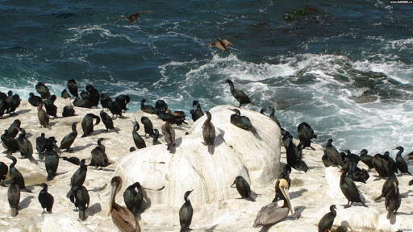

Parcel — это упаковщик для веб-приложений для разработчиков с различным опытом. Он предлагает великолепную быструю работу с использованием многоядерной обработки и не требует настройки.

Parcel может принимать любой тип файла в качестве точки входа, но лучше всего использовать файл HTML или JavaScript. Если вы подключили свой основной JavaScript-файл в HTML, используя относительный путь, Parcel также обработает его для вас и заменит ссылку URL-адресом на выходной файл.
Parcel имеет встроенный сервер разработки, который будет автоматически пересобирать ваше приложение, так как поддерживает горячую замену модулей для увеличения скорости разработки. Просто выполните команду: